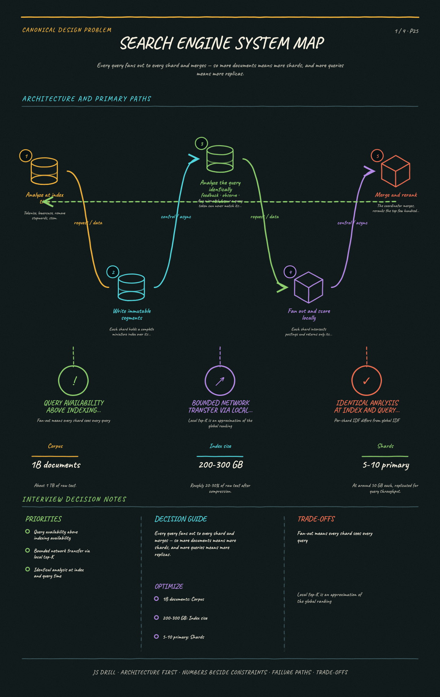

https://frosty110.github.io/js-drill/assets/system-design/infographics/design-problems/p25/architecture-overview.pngEvery query fans out to every shard and merges — so more documents means more shards, and more queries means more replicas.
Serve full-text queries over billions of documents in under a second. The signature challenge is that the inverted index inverts the obvious data layout — you store term to documents rather than document to terms — and everything else follows from making that index shardable, rankable and refreshable.
All questions, model answers and diagrams for Design a Search Engine →